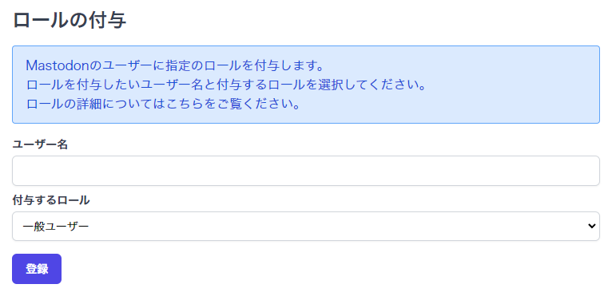

ロールについて
Mastodonにはユーザーにロールを付与することができます。
デフォルトで付与できるロールはOwner, Admin, Moderatorの3つがあります。
ロールの詳細は以下の通りです。
Ownerで出来ること
管理者権限フラグが割り当てられ、すべての権限をバイパスするロールです。
このロールを持つユーザは、すべての権限フラグが有効です。
また、ロールの権限を変更することが出来ます。
Adminで出来ること
以下の権限がデフォルトで付与されています。
- 招待
- ユーザーを招待
- 新しい人を招待できる
- ユーザーを招待
- モデレーション
- ダッシュボードの表示
- ダッシュボードやさまざまなメトリクスにアクセスできる
- 監査ログの表示
- サーバー上で管理アクションの履歴を表示できる
- ユーザーの管理
- 他のユーザーの詳細情報を閲覧し、モデレーションを行うことができる
- アクセス権を管理
- 他のユーザーの2段階認証を無効にしたり、メールアドレスを変更したり、パスワードをリセットしたりすることができる
- ユーザーデータの削除
- ユーザーは、遅滞なく他のユーザーのデータを削除することができる
- レポートの管理
- ユーザーがレポートを確認したり、モデレーションアクションを実行したりできる
- 抗議の管理
- モデレーションアクションに対する抗議を確認できる
- 連合の管理
- ユーザーが他のドメインとの連合をブロックまたは許可したり、配信を制御したりできる
- ブロックの管理
- ユーザーがメールプロバイダとIPアドレスをブロックできる
- 分類の管理
- トレンドコンテンツの確認とハッシュタグの設定の更新
- 招待を管理
- 招待リンクの閲覧・解除を可能にする
- ダッシュボードの表示
- 管理
- 設定の管理
- サイト設定を変更できる
- ルールの管理
- サーバールールを変更できるようにします
- ロールの管理
- 自分より下の役割を管理し、割り当てることができる
- Webhookの管理
- 管理者イベントのWebhookを設定できる
- カスタム絵文字を管理
- ユーザーがサーバー上のカスタム絵文字を管理できる
- お知らせの管理
- ユーザーがアナウンスを管理できる
- 設定の管理
Moderatorで出来ること
以下の権限がデフォルトで付与されています。
- モデレーション
- ダッシュボードの表示
- ダッシュボードやさまざまなメトリクスにアクセスできる
- 監査ログの表示
- サーバー上で管理アクションの履歴を表示できる
- ユーザーの管理
- 他のユーザーの詳細情報を閲覧し、モデレーションを行うことができる
- レポートの管理
- ユーザーがレポートを確認したり、モデレーションアクションを実行したりできる
- 分類の管理
- トレンドコンテンツの確認とハッシュタグの設定の更新
- ダッシュボードの表示
ロールの管理
ロールの管理方法は2通りあります。
1. Mastodonの設定画面上で管理する
2. Hostdonのコントロールパネルでロールの付与・変更を行う
Mastodonの設定画面上で管理する
Warning
Mastodonの設定画面上ではOwnerロールを持ったユーザーのロール変更が出来ません。
Ownerユーザーのロールを変更したい場合はHostdonのコントロールパネル上で変更してください。
https://サーバーのドメイン/admin/roles にアクセスすると詳細な設定が可能です。
Hostdonのコントロールパネルでロールの付与・変更を行う
Hostdonコントロールパネル にログイン後、「Mastodonサーバー」→「管理」→「サーバーの選択」→「サーバー設定」→「ロールの付与」とアクセスすると以下の画面となります。

「ユーザー名」にロールを付与したいユーザー名を入力し、「付与するロール」から付与・変更したいロールを選択して登録ボタンを押すと、ロールの付与・変更が行われます。